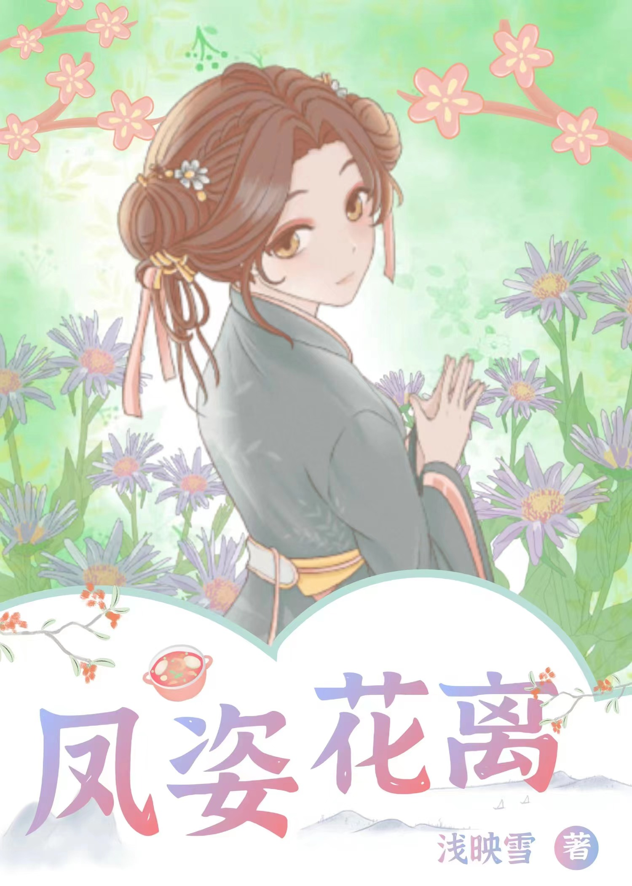

幡然醒悟
在老公的情人生日那天，他当众掐着我的脖子，把我狠狠地抵在冰冷的栏杆上，猛地推下了海。 再次被人拉上来时，我浑身都是血，几乎是奄奄一息。迟延冷冷地看着我，眼中没有一丝怜悯，“别让她死在这里，省得弄脏了我的游艇，拉下去吧！”这话刺在我心里，终于对他心灰意冷了......
凤姿花离

“我们凤凰一族，夫君是要靠自己孵出来的。” 可我是个五彩凤凰，最低等的凤凰，我娘也是一个五彩凤凰，我娘孵出来的我爹是一只鸡， 在鸟族是最最低等的，可是我娘对我爹至死不渝。然后他俩就生下了我，一个五彩凤凰。 从小到大我就受到同伴的嘲笑、欺凌，所以我就去神魔山偷蛋，他们说神魔山的蛋都是高等蛋，我费尽心机，伤痕累累的偷一个蛋。 结果那个蛋出来之后，也是一只鸡，本来想靠着孵蛋，寻个好夫君，能改变命运，谁知道居然是一只鸡，还是一只大花鸡。 心有不甘，想再孵一个，所以我默默的把他扔了好几百次，但他每次都找回来了。 我扔他第999次的时候，他再也没回来。再次见面时，他已经是令人闻风丧胆的魔尊。